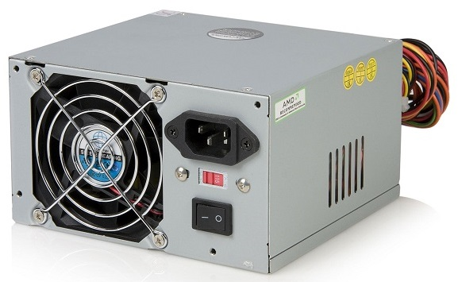
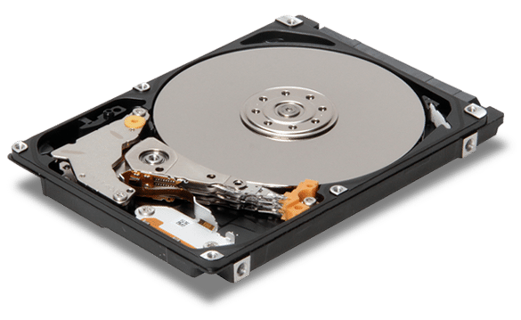
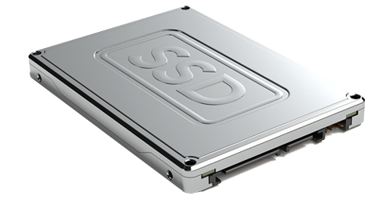
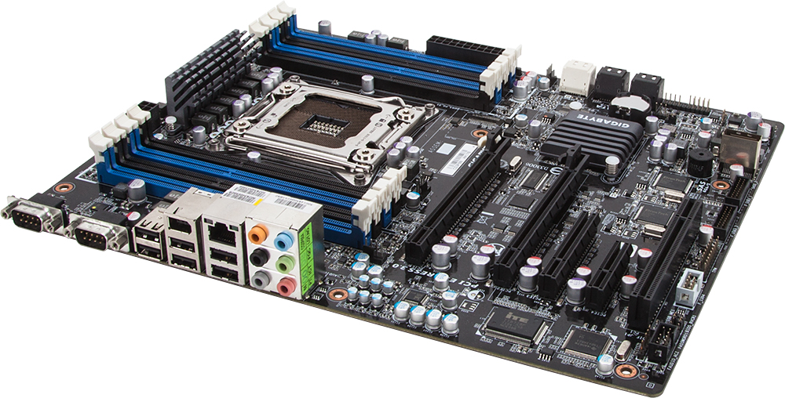
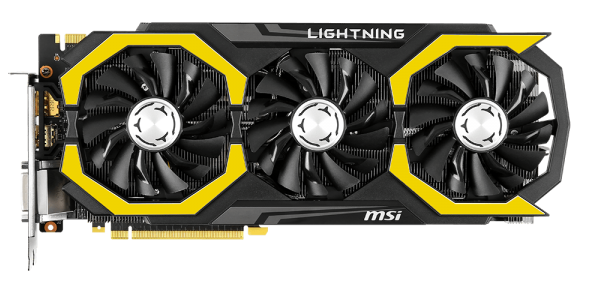
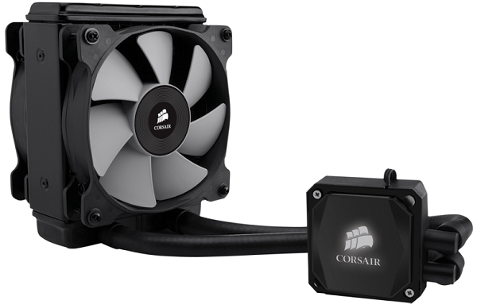
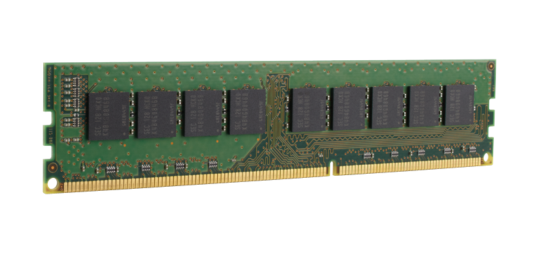

Learn about computer components:
Power Supply

The power supply unit is the piece of hardware that's used to convert the power provided from the outlet into usable power for the many parts inside the computer case.
Unlike some hardware components used with a computer that isn't necessarily needed, as a printer, the power supply is a crucial piece because, without it, the rest of the internal hardware can't function.
The power supply unit is often abbreviated as PSU and is also known as a power pack or power converter.
A PSU is not usually user serviceable. For your safety, it's usually wise to never open a power supply unit.
HDD

The hard drive is where your software, documents, and other files are stored. The hard drive is long-term storage, which means the data is still saved even if you turn the computer off or unplug it.
When you run a program or open a file, the computer copies some of the data from the hard drive onto the RAM. When you save a file, the data is copied back to the hard drive. The faster the hard drive, the faster your computer can start up and load programs.
SSD

Stands for "Solid State Drive." An SSD is a type of mass storage device similar to a hard disk drive (HDD). It supports reading and writing data and maintains stored data in a permanent state even without power. Internal SSDs connect to a computer like a hard drive, using standard IDE or SATA connections.
While SSDs serve the same function as hard drives, their internal components are much different. Unlike hard drives, SSDs do not have any moving parts (which is why they are called solid state drives). Instead of storing data on magnetic platters, SSDs store data using flash memory. Since SSDs have no moving parts, they don't have to "spin up" while in a sleep state and they don't need to move a drive head to different parts of the drive to access data. Therefore, SSDs can access data faster than HDDs.
Motherboard

The motherboard is the computer's main circuit board. It's a thin plate that holds the CPU, memory, connectors for the hard drive and optical drives, expansion cards to control the video and audio, and connections to your computer's ports (such as USB ports). The motherboard connects directly or indirectly to every part of the computer.
The most common motherboard design in desktop computers today is ATX, an Intel improvement on the AT design by IBM. Other form factors include extended ATX mini-ATX, microATX, BTX, microBTX mini ITX, micro ITX and nano ITX.
Video card

The video card is responsible for what you see on the monitor. Most computers have a GPU (graphics processing unit) built into the motherboard instead of having a separate video card. If you like playing graphics-intensive games, you can add a faster video card to one of the expansion slots to get better performance.
A staggering number of companies manufacture video cards, but almost every one includes a graphics processing unit (GPU) from either NVIDIA Corporation or AMD.
The video card installs in an expansion slot on the motherboard. While most video cards are of the PCIe format, video cards come in other formats as well, including PCI and AGP. These additional formats are older standards and don't communicate with the CPU and other components as quickly as PCIe.
CPU

The central processing unit (CPU), also called a processor, is located inside the computer case on the motherboard. It is sometimes called the brain of the computer, and its job is to carry out commands. Whenever you press a key, click the mouse, or start an application, you're sending instructions to the CPU.
The CPU is usually a two-inch ceramic square with a silicon chip located inside. The chip is usually about the size of a thumbnail. The CPU fits into the motherboard's CPU socket, which is covered by the heat sink, an object that absorbs heat from the CPU.
A processor's speed is measured in megahertz (MHz), or millions of instructions per second; and gigahertz (GHz), or billions of instructions per second. A faster processor can execute instructions more quickly. However, the actual speed of the computer depends on the speed of many different components—not just the processor.
CPU cooler

A CPU cooler is device designed to draw heat away from the system CPU and other components in the enclosure. Using a CPU cooler to lower CPU temperatures improves efficiency and stability of the system.
Air CPU Coolers
The CPU cooler may consist of a heat sink or combination of a heat sink and fan. These cooling systems are generally referred to as air cooling and are often used in conjunction with systems that are designed to improve airflow.
Liquid CPU Cooling
Another type of CPU cooling is called liquid cooling , where liquid circulates liquid through small pipes in a heat sink, drawing heat from the CPU to a dedicated radiator located on the system case or enclosure, where it is released into the ambient air outside of the system. The cooled liquid travels back through the system to the CPU to continue the process.
Ram memory

RAM is your system's short-term memory. Whenever your computer performs calculations, it temporarily stores the data in the RAM until it is needed.
This short-term memory disappears when the computer is turned off. If you're working on a document, spreadsheet, or other type of file, you'll need to save it to avoid losing it. When you save a file, the data is written to the hard drive, which acts as long-term storage.
RAM is measured in megabytes (MB) or gigabytes (GB). The more RAM you have, the more things your computer can do at the same time. If you don't have enough RAM, you may notice that your computer is sluggish when you have several programs open. Because of this, many people add extra RAM to their computers to improve performance.